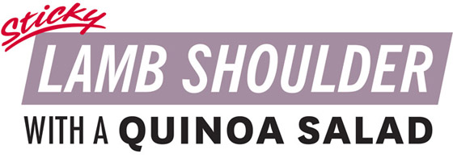
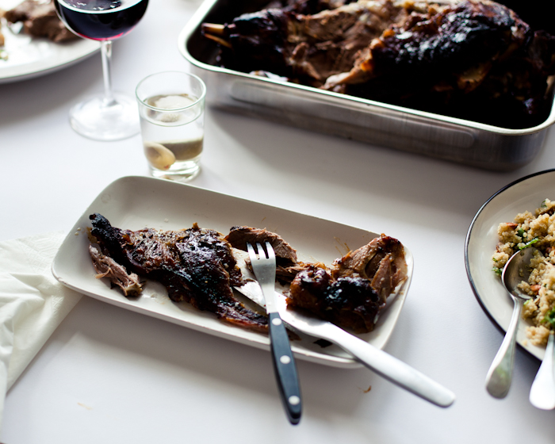
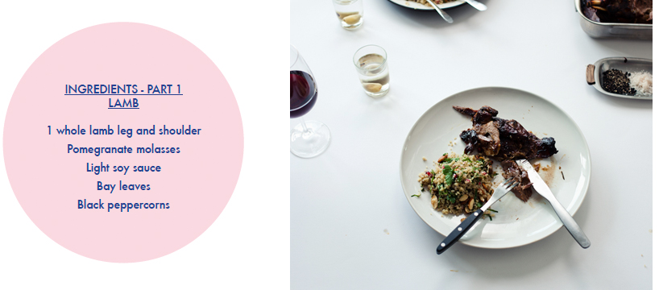
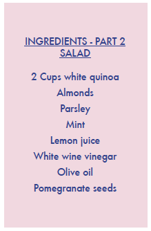
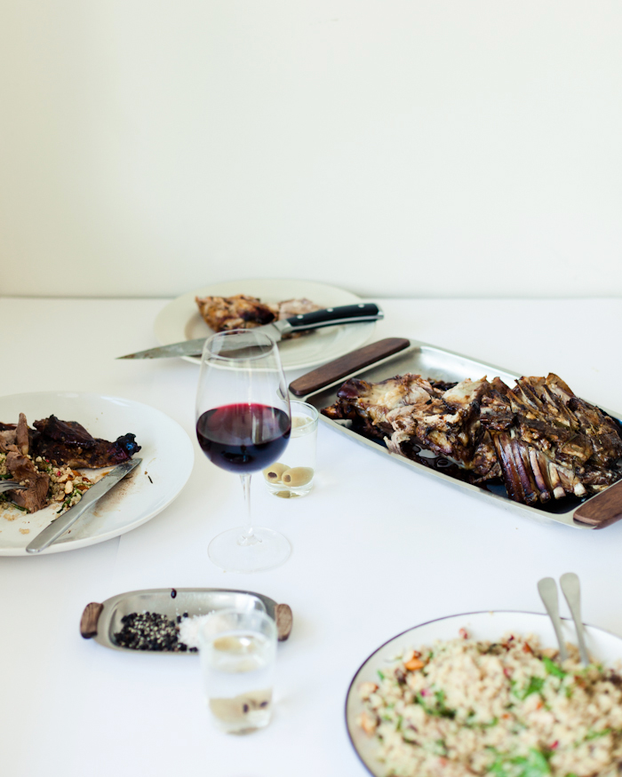

Giant. Slab. Of. Meat. This is a whole leg and shoulder of lamb – get your butcher to leave as
much bone in as possible. Not so much of a saucy dish as it is sticky, salty and sweet. This
could also work really well on a spit or in one of those amazing outdoor pizza ovens. Serve with
a white quinoa, herb and nut salad.

Take the lamb out of the fridge and allow it to come to room temperature, then gently massage
it with olive oil and a generous amount of black pepper and salt.
Combine 4 tablespoons of pomegranate molasses with the soy sauce. Add the brown sugar and
mix well. Again, massage the meat with this mix and pour anything left over around the meat in
the baking tray. Top up with ¾ cup of water, drop the garlic and a few sprigs of rosemary into
the liquid, and put into the oven at 150 ºC.

For the salad, cook the quinoa according to its packet method and set aside.
In a bowl, add the white wine vinegar and ½ tablespoon of pomegranate molasses to ½ cup of
extra virgin olive oil. Squeeze in the juice of half a lemon, adding a good pinch of sea salt and a
couple of turns of freshly cracked pepper. Set aside.
Prepare the rest of the salad by chopping the almonds, roughly chopping the herbs and
removing the pomegranate seeds. Combine everything well before serving with the lamb.
